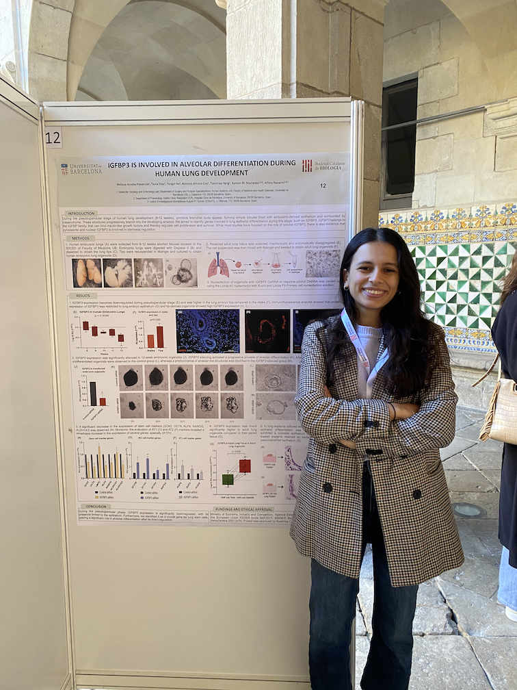
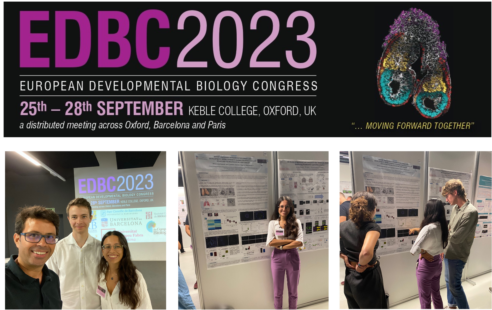
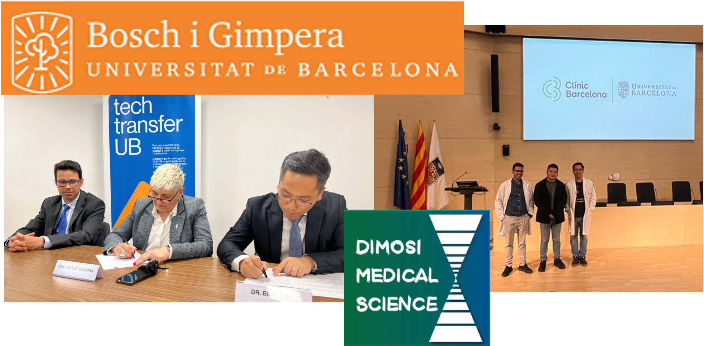
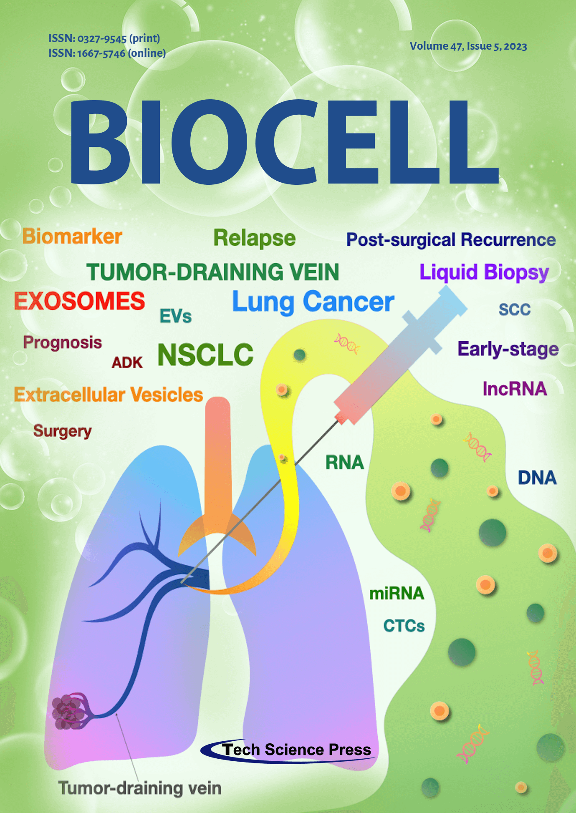

We have held the II Lung Cancer Retreat of the Functional Unit of Thoracic Tumors at the La Mola Campus in Terrassa. The scientific content has been of a very high level this year. It was organized by the Lung Cancer Chair Hospital Clínic-UB AstraZeneca.
We are finalists in the IDIBAPS 2025 Scientific Photography Competition with this picture of Melissa Acosta:

Go to the news on the IDIBAPS page here
On Monday, March 17th, our PI, Dr. Alfons Navarro, participated in the competition for the position of Full Professor of Human Anatomy and Embryology...

 The people in the photo are (from right to left): Dr. J.A. Marchal, Dr. J.J. Rodríguez Peralto, Dr. A. Prats, Dr. A. Navarro, Dr. N. Agell and Dr. H. Boulaiz.
The people in the photo are (from right to left): Dr. J.A. Marchal, Dr. J.J. Rodríguez Peralto, Dr. A. Prats, Dr. A. Navarro, Dr. N. Agell and Dr. H. Boulaiz.
Thesis defense of Melissa Acosta Plasencia.
The people in the photo are: (from right to left) Dr. Elena Gallardo, Dr. Agustí Barnadas, Melissa Acosta, Dr. Bernat Gel, Dr. Alfons Navarro.Published in Translational Cancer Research an interview with Dr. Alfons Navarro.
Thesis defense of José Carlos Benítez Montañez.
 The people in the photo are: Dr. Agustí Barnades, Dr. Albert Biete, Dra. Rosa Querol, Dr. Jose Carlos Benitez, Dr. Marc Campayo and Dr. Alfons Navarro.
The people in the photo are: Dr. Agustí Barnades, Dr. Albert Biete, Dra. Rosa Querol, Dr. Jose Carlos Benitez, Dr. Marc Campayo and Dr. Alfons Navarro.
Photo of the Thoracic Oncology Unit. What great people!

XXXV DEVELOPMENTAL BIOLOGY MEETING - Melissa Acosta presented a Poster about IGFBP3...
Upcoming thesis defense of José Carlos Benitez. If you're into non-coding RNAs in rectal cancer, be there!
EUROPEAN DEVELOPMENTAL BIOLOGY CONGRESS 2023 - Melissa Acosta presented a Poster. Philipp Menauer also attended.
We welcome Antonio Altuna Coy, our new postdoctoral researcher in the lab!
Agreement with Chinese company Dimosi Lifescience & Medical for lung cancer research. See more
We designed the cover image of Biocell journal after our Viewpoint publication.

 The people in the photo: Dr. Campayo, Dr. Moreno, Dr. Biete, Dr. Bing Han, Dr. Molins, Dr. Navarro, Dr. Monzó.
The people in the photo: Dr. Campayo, Dr. Moreno, Dr. Biete, Dr. Bing Han, Dr. Molins, Dr. Navarro, Dr. Monzó.
XXXIV DEVELOPMENTAL BIOLOGY MEETING - Melissa Acosta presented a Poster